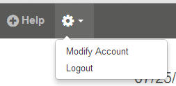
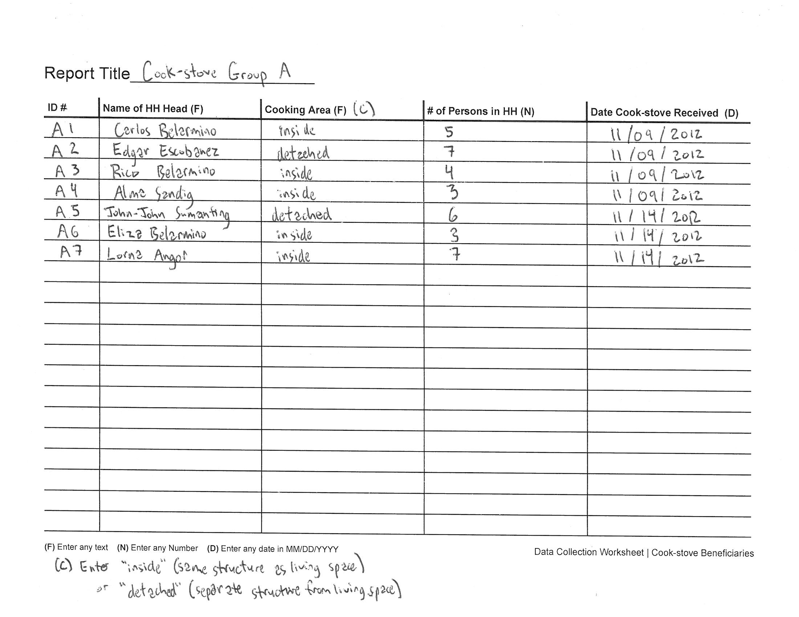

CaerusGEO Walk Through
Primary Spatial Data Collection with a Combination of Print and Digital Methods
Download a PDF Version of this Guide
Overview
Primary spatial data is information which applies to specific locations on the earth and which is collected first-hand for a specific purpose. Secondary data has been collected by someone else, perhaps for general record keeping. Useful secondary data, such as census population counts, may be plentiful. However, for project implementation and community documentation it will be beneficial to create primary data. You may want to record hazard zones, volunteer locations, community capacities, safe areas, incident locations, distribution sites for safe sex materials, or other significant data.
Merging paper and digital methods has several distinct benefits. Retaining paper methods for some aspects of data collection limits the need for expensive equipment such as GPS receivers and portable computers. It is easier to manage digital data. Survey information stored digitally can be quickly and easily updated, shared, presented, and analyzed. Numerous options exist for the use of digital data. CaerusGEO includes a simple but powerful data visualization tool while also supporting data export. The exported data can be sent to project staff and GIS specialists able to create more robust maps and project analysis, store the data in project databases, and/or share it with key partner institutions. With a little bit of training you can learn many of the same techniques. Open-source GIS software options are available for free, increasing in number, becoming more powerful, and progressively more user-friendly.
Digitizing your data allows you to take advantage of great online resources such as OpenStreetMap (OSM). OSM is a project to create and distribute free geographic data for the world. CaerusGEO uses data from OSM to create the maps used for surveys. You can pay back the favor by contributing to OSM useful data you collect. Other people working in your community, or people who just want to learn about your community, will be grateful for the additional information.
Getting Ready
Plan Your Survey
Plan regarding what information you want to collect. Think about the scope of your survey. How many different questions will you ask to gather the desired information? Think about the scale of your survey. How much data will be collected and over how large a geographic area?
Discuss the goals of the survey with project partners and community members. Are your goals reasonable given the time and effort people working on the survey can contribute? Do community members understand the purpose of your survey activities?
If this is your first time conducting a survey to collect primary geospatial information you might try to consult with a GIS specialist. Also, consider starting small or with a test survey as a learning experience.
Get Started with by Creating an Account
Let’s begin! Open up your web browser and go to www.caerusgeo.com
The first time you use CaerusGEO you’ll need to create an account. Click at the top-right of the screen or
You will need to type in your name, email, and a password. Also, set your time zone. Click and then check your email for a message with a subject line of ‘Confirmation instructions’ from admin@caerusgeo.com. Click the ‘Confirm my account’ link to complete the creation of your account and login.
Clicking the gear icon at the top of the page will allow you to ‘Logout’ or go to the ‘Modify Account’ page where you can perform actions such as change your password or cancel your account.
Clicking the help icon at the top of the page will take you to a page of tutorial articles. The information available should increase as the site is further developed.
Building Your Survey Online
Now that you have done some initial planning and created a CaerusGEO account, you are ready to create a survey! Open www.caerusgeo.com and login. Click at the top of the page.
Step 1 - Survey Info
Step one is to create a title and optionally add a brief description. The title should relate to the purpose of your survey.
- As you create your survey CaerusGEO will give descriptions, example usage, and tips.
Step 2 - Survey Type
Step two is to choose the type of spatial feature your data will describe. Will you be recording:
Points? Such as places or neighborhood names.
Areas? Such as safe areas, community boundaries, or hazard zones.
Lines? Such as evacuation routes.
Step 3 A - Survey Design
Creating a survey is not as simple as just creating questions. You need to think about what questions you ask and how you structure them to get the best data possible. Below are a few tips:
- We strongly recommend always using multiple choice fields whenever possible. This keeps answers consistent so you can compare between inputs.
- Avoid text fields whenever possible. Data will be inconsistent and impossible to compare.
- Only ask for data you really need. If you want to capture extra data, click the “Note” button.
- If using CaerusGeo as part of a larger GIS fieldwork exercise, have your answers in CaerusGeo line up with the attributes in your fieldwork spreadsheet guide.
Step 3 B - Survey Fields
After designing your survey you will need to enter your survey fields in CaerusGeo. Each field requires a descriptive ‘Field Heading’ and a ‘Field Type’ that defines the format of the answer. Will the survey answer be:
Text? Such as name or description.
Number? Such as age, population, or monetary amount.
Date? A specific calendar day.
Date + Time? A specific calendar day, hour, and minute
Multiple Choice (one answer)? Allows for selecting a single option from a list of predefined options. Should be used when answers are mutually exclusive. Examples:
Multiple Choice (one or more answers)? Allows for selecting one or more options from a list of predefined options. Should be used when more than one answer might apply. Examples:
Step 4 - Survey Area
Step four is to delineate your survey area. Let’s start by moving around the map!
Use the search bar to move the map to the approximate area of your survey.
Hover your cursor over the layers icon in the top right corner and use the menu that appears to switch between viewing Open Street Map (OSM) data and viewing Bing Aerial imagery.
- Bing Aerial Imagery is not available for all areas.
- The maps printed for your survey activities will use the OSM layer.
To move the map, left-click and hold outside the survey area selector box and drag.

To zoom the map in and out, use the scroll wheel on your mouse or the +/ – buttons in the top left.
Adjust the map until zoomed in as far as possible with the entire extent for your survey still visible.
Now let’s select and subdivide your survey area!
Left-click and hold inside the survey area and drag to move the survey area selector. Move the selector to the top left of your area.
Change the number of grid tiles with the arrow icons at the right-center and bottom-center of the selector box. Each tile will be a survey map page.
The maximum number of tiles you can use is 16. Expand and shrink the survey area selector with the icon in the lower right corner of the selector box.
Look at the examples below and note how the same survey area, at the same zoom, can be divided into 1, 4, or 16 pages. When choosing how to divide your survey area you will need to consider its size, the level of detail available from OSM, and what data you will be mapping. More division means smaller coverage areas.
The level of detail on Open Street Map (OSM) can vary a lot depending on the region of the world. You will have to see what is available in your area. The region used above has only the coastline and a few roads.
If your area of interest lacks detail, consider doing a community mapping exercise using OpenStreetMap. To learn more check out http://learnosm.org
Some areas will have buildings, infrastructure, and even land use mapped. Look at the map below. Can you recognize which shapes represent buildings? Can you identify a place of worship? A hospital?
Step 5 - Review and Publish
The last step is to review and publish. You will be able to check your work in the previous steps. Check for mistakes. It is better to catch a type now instead of when presenting your finished survey! On the pop-up screen after clicking you’ll want to click 'View Survey'. The next section will explain the other options.
Collecting Data
Downloading and Printing the Necessary Documents
Click the ‘Downloads’ tab to access the documents you will need to print to carry out the field work portion of your survey. You will need to print either the Atlas or Wallmap, and Data Collection Worksheets.
The Atlas is:
- Meant to be printed on A4 paper.
- An overview page showing your entire survey area and how it is divided into tiles.
- A full page printout of each tile for easy drawing.
- Great for taking with you in the field.
The Wallmap is:
- Meant to be printed by a large format printer at up to 60”x42”. If printing at a smaller size, be sure to keep the same proportions.
- A single large map showing the survey area.
- Great for presentations, group participatory mapping at meetings, and other similar activities.
The Data Collection Worksheet is:
- Meant to be printed on A4 paper.
- A table for recording the answers to the survey fields answers of each entry. You will need to print enough copies to record all your survey entries.
Off the Computer and Into the Field!
Time to leave the computer and go collect your data. Choose a simple and logical system for assigning a unique Entry ID to each survey entry. Fill out all columns in the Data Collection Worksheet for an entry and then record the geospatial information on the Wallmap or correct Atlas page. Label the feature on the map with the matching Entry ID. Examples are on the following pages.
Familiarize yourself with the printed map and how it represents your survey area. In the lower left of any map printed there will be a small compass icon pointing North as well as a graphic scale.
You can use a ruler, transfer the graphic scale to a scrap of paper, or mark a twig to make a moveable tool for measuring distances on the map instead of estimating by sight alone. If mapping many areas of the same size, such as farm plots or campsites, you can cut a template to the right size using the graphic scale.
Example Data Collection Worksheet
- The worksheet will have a key along the bottom to remind you of the type for each field. Feel free to add your own notes. In the example, a note has been added that the answer for Cooking Area should be limited to either “inside” or “detached.”
- The Report Title can be used to help you keep track of information such as the surveyed group or who collected the particular set of data.
- Remember that Entry ID should be unique for each entry since it is used to tie together the survey information you record on the worksheets with the data you record on the maps.
Example Atlas map page, with point data from the Example Data Collection Worksheet added by hand
- If recording points, use an ‘X’ on the paper map for each point.
- If recording areas, draw the boundary using a series of straight lines. Using curves will make it difficult to enter later on the computer.
- If recording lines, use a series of points connected by straight lines.
Computer Data Entry
What’s Next?
To digitize survey entries you will go to the CaerusGEO website, compare your printed survey maps to the online source map, and transfer the map data to the website. Survey entries are grouped into reports. Survey entries can be manually entered one at a time and you can type in the survey answers as you go.
Additionally, you may begin a report with a batch upload of survey entries that were first entered in Excel. You will still need to go through and record map data for each entry on the website but the survey answers will be already filled in. This should reduce the amount of time you need to spend connected to the internet. Go to the ‘Downloads’ tab and download the CSV collection template. Type in your survey responses and save the document. When saving, be sure to keep the file in the CSV format. You should click ‘Yes’ if a warning box appears asking if you want to keep the workbook in this format.
Start by clicking ‘Add Data’ then enter your Report Title and choose the type of data entry.
If you click ‘Manual’ you will be taken directly to the map. If you click ‘Upload’ you will be asked to ‘Choose File.’ Browse to the saved CSV collection template containing your data. After clicking ‘Upload and Import’ you will be taken to the map. There will be a drop-down list of entries distinguished by Entry ID. Choose an entry. The survey answers from your Excel file should display. Edit the answers if necessary. Then you will need to add Geo Data for each entry. After adding Geo Data, the ‘x’ next to that Entry ID in the dropdown list should change to a check-mark. To add entries not included in your Excel file or if you didn’t upload data, click ‘New Entry’ , enter your survey answers, and add Geo Data.
Adding Geo Data
For POINTS left-click the ‘Add Point’ icon. Then left-click the map at the desired location.
For AREAS left-click the ‘Add Area’ icon and then use single left-clicks on the map to outline the area. Clicking on the starting point will close the shape.
For LINES left-click the ‘Add Pathway’ icon and then use single left-clicks on the map to draw the line. Click at the start of the line, at each place where the line changes direction, and then twice at the end location of the line.
Left-click ‘Save Changes’ to finish your edits for the survey entry. When completely finished, use the buttons at the top right to navigate to the Reports tab or Visualization tab.
Hints and Tips for Data Entry
- View all your reports on the ‘Reports’ tab.
- From the ‘Reports’ tab click the ‘Edit Data’ icon on the same line as a report to add entries or modify existing entries.
- When editing a report, you can change the title by clicking ‘Report Options’ in the top right of the screen.
- You can edit entries after they have been saved. Choose an entry by ID using the drop-down list then click the pencil/page icon below ‘New Entry.’ Make your edits and save changes.
- When editing an entry you can adjust the Geo Data. Left-click and hold then drag to reposition a point or vertex. The small squares along area boundaries and lines can be dragged. After moving a vertex marked by a gray square, new squares will appear between it and adjacent vertices. This allows for complex adjustments. You can delete a vertex marked by a white square with a double left-click.
- To change an entry ID you will need to delete the entry using the trash can icon below ‘New Entry’ and then create a new entry.
- If working with others on a single survey have them create their own accounts on CaerusGEO. Then go to the ‘Sharing’ tab and add them as collaborators.
- Be careful about extra spaces. The program will think “ blue” (with a leading space) is different from “blue” (no extra spaces) is different from “blue ” (with a trailing space).
- Do not use commas in number fields (example: type 3758 and not 3,758).
- If you are adding an area or line, and have not yet closed or ended the feature, you may start over the trace by re-clicking the “Add Area” or “Add Pathway” icon.
- Saving an entry requires that all survey fields are filled in.
- Below is a side-by-side comparison of Open Street Map (OSM) and Bing data for the same area of a rural neighborhood in Nepal. Remember that hovering with your cursor over the layers icon in the top right corner allows you to switch between the OSM data and Bing Aerial data (satellite imagery, if available). Note that there are additional details such as roof color, and paths not marked in OSM. When digitizing your survey such differences in detail, combined with familiarity of the area, may help in accurate placement of survey points.
Using Your Data
Visualization and Viewing Your Data
Click the ‘Visualization’ tab. You will be able to see all your entries on the map. You can change which entries are displayed by adjusting which reports are included and filtering based on the survey answers. You can share the map from the ‘Visualization’ tab with other people, even if they are not on CaerusGEO. Go to the ‘Sharing’ tab, check the ‘Active’ box, and click ‘Save.’ The site will create a link you can use to share the visualization of your survey.
Exporting Your Data
Exporting data lets you download files that contain both survey answers and geographic coordinates describing your map data. The files can then be emailed to Red Cross Project staff and GIS specialists. They can then create more robust maps, analyze projects, store the data in project databases, and/or share it with key partner institutions.
To export data go to the ‘Reports’ tab.
If you have multiple reports, from multiple data entry sessions, you can choose to export data from all reports. Click ‘Result Exports’ at the top-left. Or you can export from a single report. Click ‘Exports’ on the same line as the desired report.
What data format do you want to export:
CSV? It stands for Comma Separated Values and can be opened/viewed in Excel.
GeoJSON? It is an alternate format for encoding data and can be useful for transferring the data to a database, GIS software or other geospatial programs.
Exported line or area data will have a coordinate pair for each vertex in the line or boundary. Complicated lines or shapes will have lots of numbers in the Excel sheet to describe their positions. Don’t be intimidated!
Other Resources
- Quantum GIS is a user-friendly, open source geographic information system (GIS) great for more advanced data visualization, management, editing, and map making. Find it at http://www.qgis.org
- OpenStreetMap (OSM) is a project to create and distribute free geographic data for the world. It is being built by volunteer contributors. Learn more at http://wiki.openstreetmap.org and http://learnosm.org
- The Humanitarian OpenStreetMap Team (HOT) utilizes OSM to assist disaster response and development needs. Find out more about their activities at http://hot.openstreetmap.org
- The MapAction Field Guide to Humanitarian Mapping is a detailed manual available for download at http://www.mapaction.org/resources.html